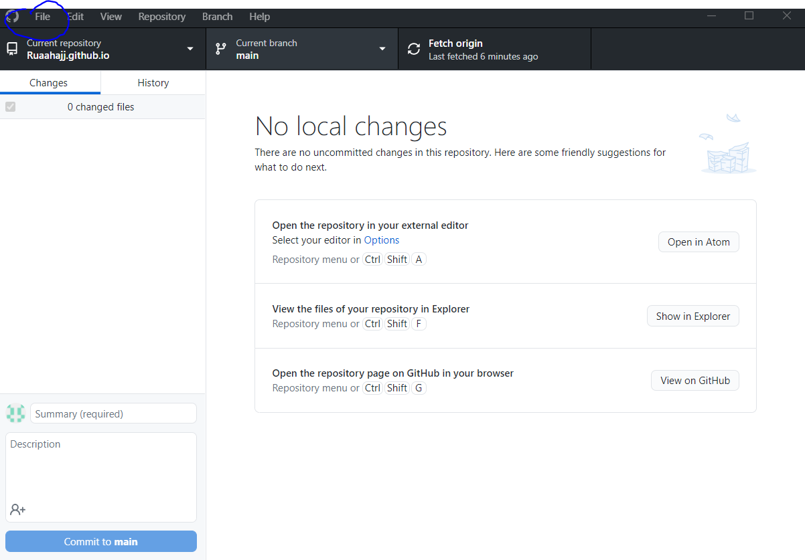

First, I made a github accunt,then downloaded github.
,
Then, I made a repository with the name "Ruaahajj".
Making a repositry can be done by going to file-->
new repository
Or simply by pressing CTRL + N
<

Next, we have to create an html file to add to our repository.
To do this, open the notes app, go to file-->
save as-->
and save it with the HTML extention
(very important!! highlighted below).

Now that we have our html file, we can start coding!
HTML is one of the simpler programming languages,
and there are many tutorials on youtube. You can start by typing anything you want.
Congratulations! You just created a website!
Dont forget to save your work!
Now, to save our progess, we must commit and push (save to repository).
Using the github app, add a comment at the box marked 1
to describe what you did (for example, 'draft 1 for website')- this will be useful later on.
Then click commit (box2), and push origin.(highlighted below)